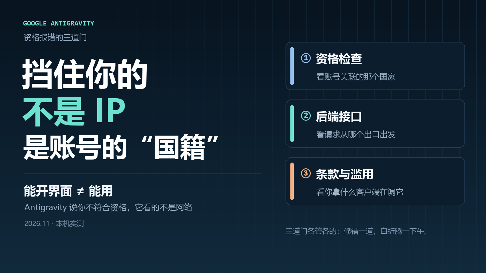
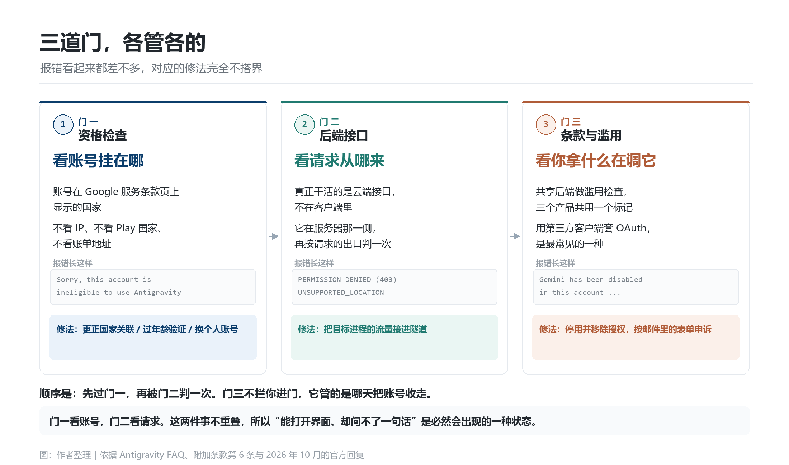
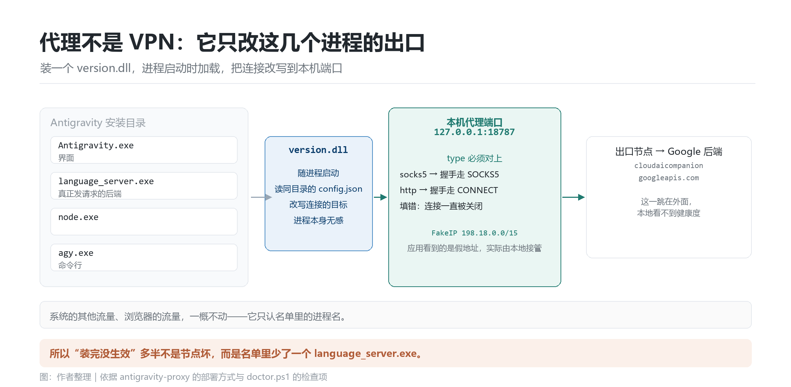
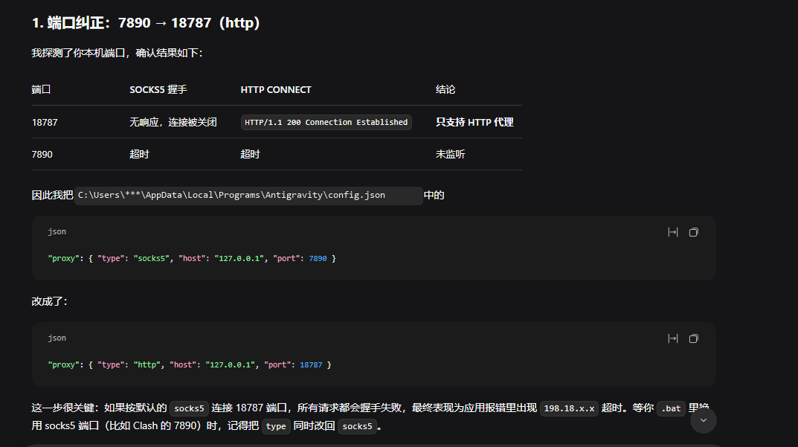
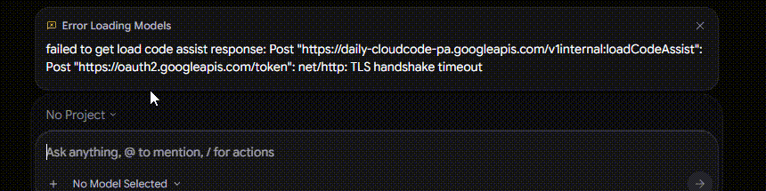
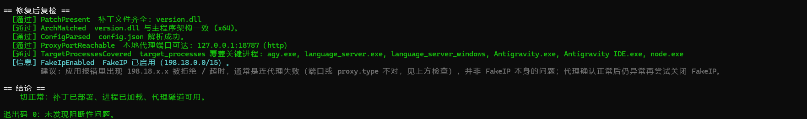
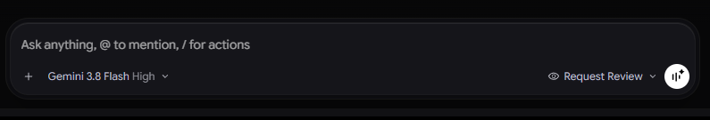

11 月 25 日下午，我把 Antigravity 装好，登录，屏幕上出现两行字：
Sorry, this account is ineligible to use Antigravity
Your current account is not eligible for Antigravity, because it is not currently available in your location.
第一反应是网络。换节点、切全局、挑美区机房，一轮折腾下来，那两行字一个字都没变。
因为它在看的不是你的连接从哪儿进来。它看的是这个 Google 账号在服务条款页上挂的那个国家。
这句话只有一行，但它背后是三道互不相通的门。时间之所以会耗光，通常不是门太难开，是在修错的那一道。

门一是资格检查。官方 FAQ 列了五项：国家/地区关联、年龄、账号类型、账号验证、有没有条款标记。五项里只有第一项和“你在哪儿”有关，而它认的是 policies.google.com/terms 页面上显示的那个国家。Google 工作人员在开发者论坛里说得很直白：不是 IP，不是 Google Play 国家，也不是账单地址。
门二在后端。界面能起来，是因为界面在本地；模型列表和对话要打到 cloudaicompanion.googleapis.com。这一跳发生在服务器那一侧，它会按请求的出口再判一次。日志里那行 403 就是这儿来的：
ERROR: PERMISSION_DENIED (code 403): Your current account is not eligible for
Gemini Code Assist for individuals because it is not currently available in your location.
reason: UNSUPPORTED_LOCATION, domain: cloudaicompanion.googleapis.com, error_number: 1008门三不是技术问题，是条款。滥用检查在共享的后端层，附加条款第 6 条禁止“把本服务与并非由我们提供的产品搭配使用”，并且点名了 OpenClaw 配 Antigravity OAuth 这种用法。它的后果不是“不能用”，是“哪天不能用”。
三道门叠在一起，会得到一个反直觉的结论：门一看账号，门二看请求，这两件事不重叠。 所以“界面能开、模型能选、一问就报错”不是 bug，是一种可以稳定复现的状态。谁把它当 bug 修，就会一直在门口打转。
这套设计有个好处：IP 会变，账号不会。按账号判，结果可复现、可申诉，也能和套餐与计费对上。
顺带记个数。FAQ 的支持列表是 224 个国家和地区：美洲 51、欧洲 47、非洲 56、亚洲 43、大洋洲和南极洲 27。截至 2026 年 10 月 30 日，中国大陆、香港、俄罗斯、白俄罗斯、摩尔多瓦、伊朗、叙利亚、朝鲜、古巴不在里面；乌克兰在。早期流传的“乌克兰不支持”“200 多个国家”两处都已过时——这类清单会变，只认实时的那一份。
| 报错（截取） | 它在说什么 | 先修哪儿 |
|---|---|---|
ineligible to use Antigravity | 资格检查没过；第二行带 location 就是国家问题 | 门一 |
not available in your location | 账号国家不在列表，或刚改完还没同步 | 门一 |
Eligibility check failed（CLI） | 登录成功了，账号检查没过；后端是 403 VALIDATION_REQUIRED，不一定是地区封锁 | 门一 + 验证 |
Further action is required | 地区这一关已经过了，卡在账号验证；最常见的形态是死循环 | 验证 |
not eligible for ... AI plans | 这是套餐权益，不是登录界面；只看国家和年龄 | 门一（套餐） |
unexpected issue setting up your account | 设置阶段挂了：令牌残留、改区没生效、续费延迟 | 本地重置 |
Gemini has been disabled ... Terms of Service | 条款封禁，三个产品一起中招 | 门三 |
第四条值得单独说一句。Google 工作人员的回复是：看到这个界面而不是地区提示，说明地区已经通过，卡的是账号的安全与验证检查。所以在这一条上换节点、改国家，全是白费。
打开 policies.google.com/terms，看页面上写的国家。
在列表里，直接跳到下一节。不在列表里、而它确实不是你现在的居住地（搬过家、账号在别处注册），用国家/地区关联表单去更正。不在列表里、而你就住在那里——到这儿就结束了，这个账号现在用不了。
那张表是用来更正真实国家的，不是绕开可用性的工具。填一个不存在的居住地，等于在账号上留一笔以后要还的债。
年龄这一关在同一个地方：18 岁以上，去 myaccount.google.com/age-verification。可能要证件或信用卡；信用卡是授权不是扣款，证件在确认出生日期之后删除。刚改过年龄的，Google 说要等 24 到 48 小时才同步。
这条最反直觉：验证可能验到了别的账号上。
浏览器里登着多个 Google 账号时，你在应用里点 Verify，跳过去的那一次，未必作用在你以为的那个会话上。结果是浏览器显示“验证成功”，应用里还是同一句提示——一个看起来无解的死循环。
做法很土：退出所有其他账号，只留一个；或者干脆开隐私窗口，只登那一个。确认两步验证开着，恢复手机号是普通号码。验完别急着点第二次，等几分钟（用多个账号试过的，等 30 到 60 分钟），把应用完全退出（托盘里也退）再重开。
如果浏览器停在 accounts.google.com/signin/continue 显示 500 或“We couldn't verify your info”：别再顺着跳转走，直接开年龄验证页做完；同时关掉 VPN、代理和那些会改请求头的扩展，它们会让验证页认不出你。
应用里点“退出登录”不撤销服务器端的授权。去 myaccount.google.com/permissions，把 Antigravity 移除。
然后在应用里按 Ctrl+Shift+P，跑一次 Antigravity: Reset Onboarding；命令行里 /logout、agy update 再来。网上流传的删 auth-tokens 目录是社区办法，官方文档没写，非删不可的话先确认那个目录真的存在。
到这里才轮到代理。先说清楚它是什么：它不是 VPN，不改系统路由，只在几个进程启动时加载一个 version.dll，读同目录的 config.json，把连接的目标改写到本机端口。

最后落在机器上的是这么一段，三处都能单独把人卡住：
{
"proxy": { "host": "127.0.0.1", "port": 18787, "type": "http" },
"child_injection": true,
"target_processes": ["Antigravity.exe", "language_server.exe", "language_server_windows", "node.exe"]
}type 写 socks5 还是 http，得看那个端口说什么方言。混合端口两种都行，HTTP 专用端口必须写 http。写错的表现是握手一直被关闭，看起来像节点挂了。target_processes 里必须有 language_server.exe。少了它，界面走代理、后端直连，症状正好是“能开、不能问”。port: 0 是全部直连，等于把开关关掉。还有一条不太像技术问题的规矩：补丁的母本目录必须放在安装目录之外。应用更新会覆盖安装目录，母本放在里面就一起被删了。
顺带回答一个常被问的：免费账号可以用。判据是能不能打开 Google AI Studio——能打开，说明这个账号和这条链路都活着。
下面四个都是我实际踩过的，共同点是：报错指向的位置，都不是病灶。

这张诊断值得记住：18787 对 SOCKS5 无响应、连接被关闭；换成 HTTP CONNECT，回 200。结论只有一句——这个端口只说 HTTP。另一个 7890 不是“没配好”，是压根没有进程在那个端口上监听。
配置里原本写的是 socks5 + 7890，两处都不对。改成 http + 18787，握手才通。
一个端口同时支持两种协议很常见，但“支持”和“默认”是两件事。工具的默认值，不等于你手上那个代理的默认值。

应用更新之后，模型列表刷不出来，弹的是这一行：
failed to get load code assist response:
Post "https://daily-cloudcode-pa.googleapis.com/v1internal:loadCodeAssist":
Post "https://oauth2.googleapis.com/token": net/http: TLS handshake timeout三个细节。net/http 说明发请求的是那个 Go 写的后端进程，不是界面。TLS handshake 卡住，说明 TCP 连上了、握手没完成——这是“隧道不通”的形状，不是“账号不符”。而“界面能开”这件事，从头到尾都不是“能用”的证据。
处理顺序：先重启代理软件，再跑一次 doctor.ps1 -Action Repair，最后才开应用。
代理软件用一个保留网段做假地址：198.18.0.0/15，叫 FakeIP。应用以为自己在连真域名，实际连的是本地代理，由它接管。
所以报错里出现 198.18.x.x，是在告诉你一件好事：流量进去了，坏的是隧道那一头。排错方向立刻从“应用坏了”改成“代理链路坏了”——这是两个成本差十倍的方向。
反过来，如果报错是域名解析失败、或者连一个真实 IP 超时，那才说明根本没进代理。

这份输出值得逐行看：补丁文件齐全、架构对得上、config 解析成功、127.0.0.1:18787 (http) 可达、名单覆盖 agy.exe、language_server.exe、language_server_windows、Antigravity.exe、Antigravity IDE.exe、node.exe，FakeIP 开着。结论一行：一切正常。
它同时说明另一件事：这套东西的健康状况是可以被检查的，不必靠“打开试试”。退出码只有四种：0 健康、1 需修复、2 修复未完成、3 环境问题。看到 3 就别再动配置了，那不是配置的问题。
这套办法能让一个账号在这台机器上跑起来，但它不改变条款。
附加条款第 6 条还在那儿。2026 年 2 月 27 日，Google 在 gemini-cli 的讨论区里给过恢复流程：对近期被标记的账号做过一次系统范围的自动解封；今后被标记的会收到一封邮件，和一条指向 Google 表单的错误信息；读完条款、重新确认遵守，账号通过定期同步恢复，通常一两天；第二次违规是永久封禁。
还有一句要记住：滥用检查在共享的后端层，所以 Antigravity、Gemini CLI、Code Assist 共用同一个标记。在应用、CLI、IDE 之间换着试，清不掉它。
边界也很明确。agy -p 的无头模式给自己的脚本和 CI 用，是允许的；把 agy 包进第三方编码代理、或者自动轮换账号，不支持。正经要上生产，路是 Gemini Enterprise 或者 AI Studio 的 API key。
把“能不能用”当成配置问题，比当成立场问题好办得多。但如果这套流程要长期跑，最好别把工作建在这条路上。

回头看花掉的时间：装代理不到二十分钟，剩下的全在搞明白那两行字到底在说什么。
所以排错最贵的一步，不是修，是判断该修哪一层。修错一层，你会攒下一堆“我也照做了”的无效经验，最后开始怀疑是运气问题。
文中截图来自作者本机，2026 年 11 月 25 日，项目名、用户名与对话内容均已隐去；示意图为作者自绘。可用性以官方页面为准。